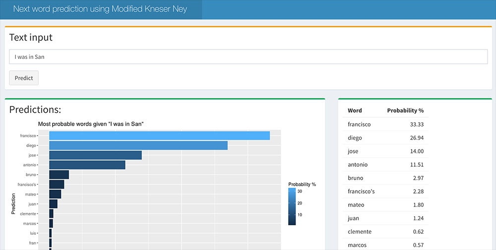

Many of us use next word prediction each day - most commonly on our mobile phones. These tools can help improve speed of typing and improve spelling accuracy.
The aim of this project is to produce an application that predicts the next word, given the context of the words keyed by the user. The project utilises best practice algorithms to maximise predictive performance.
The application is hosted within the Shiny framework and can be found here.
How does the app work? The user enters text into the input area, the most probably next words are then shown to the user in descending order.
Image 1: Application
